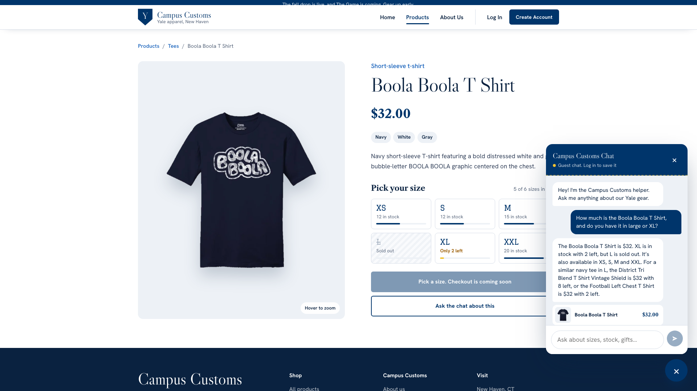
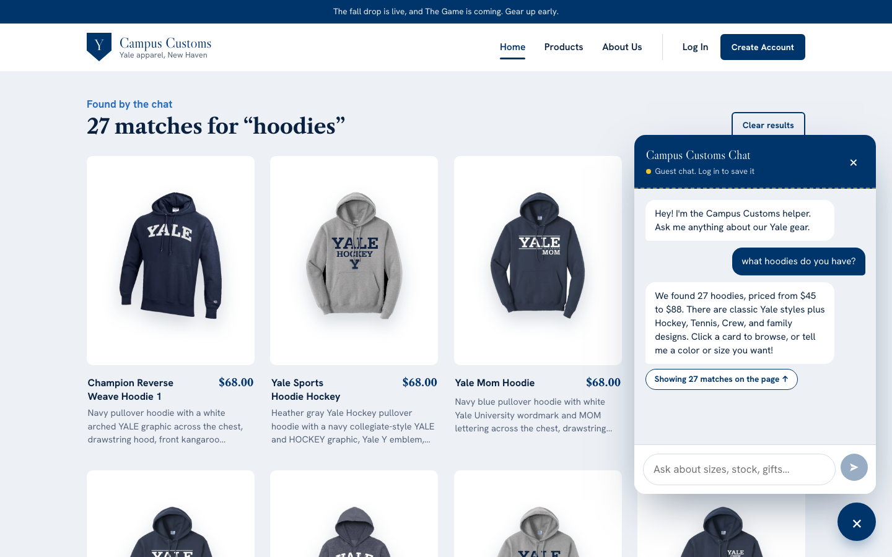
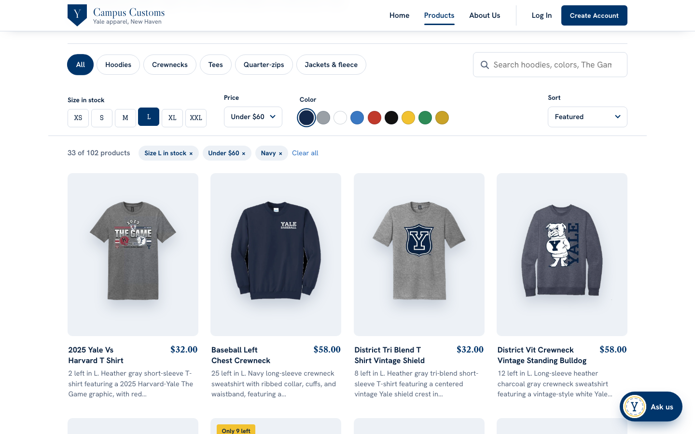

1. The chat answers a price and stock question from the database
Asked "How much is the Boola Boola T Shirt, and do you have it in large or XL?", the chat answers $32, XL in stock with 2 left, and L sold out. That matches the database exactly, and the product page's own size tiles beside it ("Sold out" on L, "Only 2 left" on XL). Because L is sold out, it also offers two similar navy tees that really have L in stock.

Screenshot: app_check_images/inventory.png, product page at 1920 × 1080.
Database answer we already knew
SELECT c.price, i.size, i.quantity FROM catalogue c JOIN inventory i USING(product_id) WHERE product_id = 'boola-boola-t-shirt'
| Size | Quantity | Price |
|---|---|---|
| XS | 12 | $32.00 |
| S | 12 | $32.00 |
| M | 15 | $32.00 |
| L | 0 (sold out) | $32.00 |
| XL | 2 | $32.00 |
| XXL | 20 | $32.00 |
The alternatives are real too: District Tri Blend T Shirt Vintage Shield has 8 in L and Football Left Chest
T Shirt has 2 in L, both $32. The backend log for this message shows the tool call
check_size_stock, and the reply is automatically rejected if it states a price or stock number
no tool returned.
2. A category question fills the page with product cards
After "what hoodies do you have?", the agent returns structured search results. The website shows all 27 matching hoodies as regular product cards (image, name, price, short description) under "27 matches for 'hoodies'", and the chat links to them with "Showing 27 matches on the page". The cards come from the search tool's database results, not from the chat's wording, and each one opens its product page.

Screenshot: app_check_images/search_results.png, home page at 1440 × 900.
Matches the catalogue
The catalogue has 27 hoodies (the same count as the Products page's Hoodies filter), priced $45 to $88.
That's exactly the range the chat states, taken from the search tool's min_price and
max_price across every match.
3. Usability improvement: search and filter controls on the Products page
Shoppers can narrow the catalogue by keyword, category, size in stock, price and color, and sort it. Here Size L in stock, Under $60 and Navy are combined, which cuts 102 products down to 33. Each card leads with how many are left in L, and each filter can be removed with its chip or all at once with "Clear all".

Screenshot: app_check_images/usability_filters.png, /products?size=L&max=60&color=Navy at
1440 × 900.
Checked against the data
Every one of the 33 products shown has at least one L in stock, costs $60 or less, and lists a navy color. Sold-out-in-L items like the Boola Boola T Shirt drop out as soon as L is selected. The filters live in the URL, so this exact view reloads the same way.